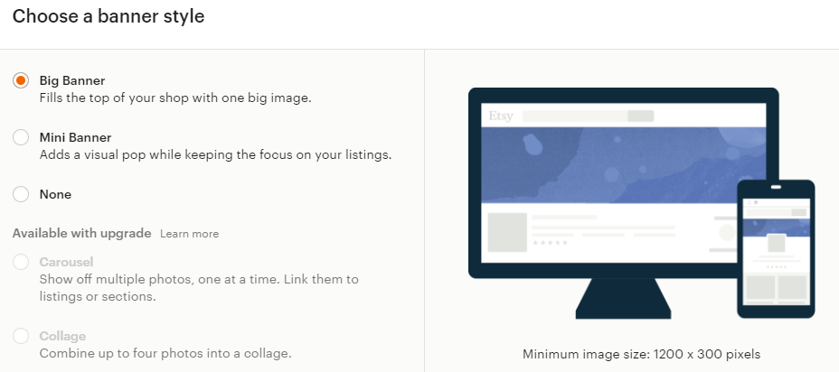
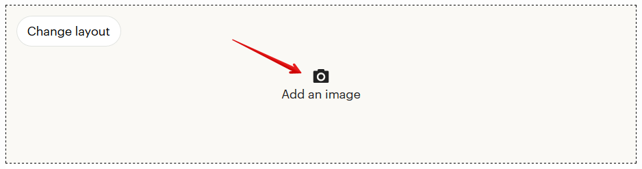
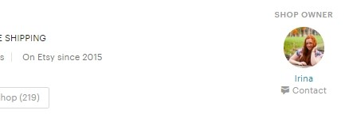
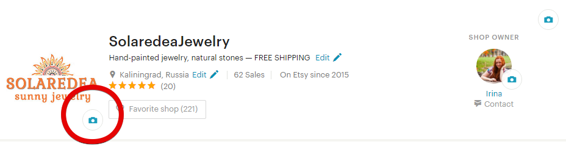
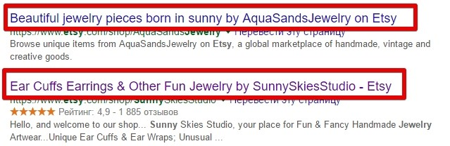
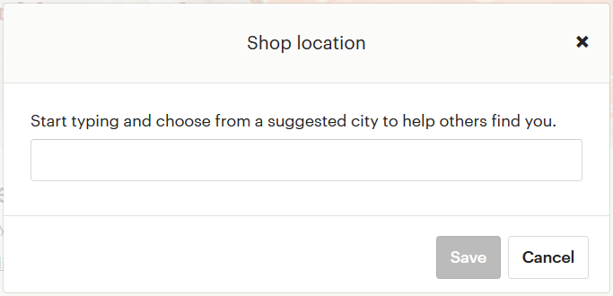
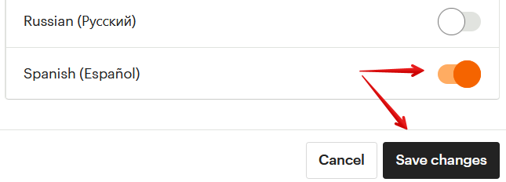
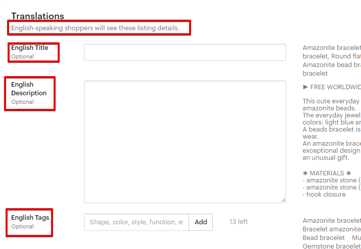
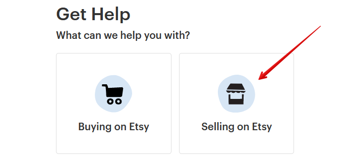

Затем появится окно, в котором нужно выбрать необходимый элемент – боль-
шой баннер (Big banner) или маленький (Mini banner).
Если вы ещё ни разу не добавляли баннер, то нажмите кнопку Add an image и
загрузите картинку.
Если баннер у вас уже есть, но вы хотите его заменить – сначала нажмите на
значок корзины в правом верхнем углу текущего баннера, а затем кнопку Add
an image.


Чем отличаются логотип и аватар
Логотип расположен рядом с названием вашего магазина и относится к нему
напрямую. Вы можете разместить там логотип своего бренда, написать назва-
ние или просто вставить тематическую картинку. Размеры не более 10Mb, ре-
комендуемое разрешение 500px на 500px.
Аватар - это ваше личное фото, которое отображается в переписке с посетите-
лями площадки, в сообщениях форума, а также везде рядом с вашим именем (в
том числе в вашем личном профиле).
Я рекомендую загружать именно свою личную фотографию, чтобы у посетите-
лей сложилось впечатление, что вы живой человек, и тогда уровень доверия
станет выше.
Кто-то из продавцов предпочитает загружать фотографию товара. Тогда в пе-
реписке на форуме Этси все участники сразу поймут, какие товары вы продаёте.
Размер файла не должен превышать 10Mb, а разрешение 400px на 400px.
Как добавить логотип
Нужно перейти в режим редактирования магазина и нажать на значок фотоап-
парат в левой стороне экрана, рядом с названием магазина и его местоположе-
нием.



А затем загрузить файл, нажав кнопку Choose a file.
Как добавить аватар
Нужно перейти в режим редактирования магазина и нажать на значок фотоап-
парат в правой стороне экрана, рядом с вашим именем.
А затем загрузить файл, нажав кнопку Choose a file.


Не забывайте, что баннер/обложка, логотип и аватар - это элементы фирмен-
ного стиля магазина. С их помощью можно создать особое уникальное настро-
ение магазина, выделиться и быть узнаваемым среди конкурентов.
Как изменить заголовок магазина
Заголовок магазина, или Shop Title, содержит в себе самые основные ключевые
фразы, которые будут использовать поисковые системы (Google, Bing и Yahoo).
Разместите здесь те ключевые фразы, которые смогут лаконично и уникально
представить вашу специфику.
Представьте, что вы увидели в Google ссылку на ваш магазин, захочется ли вам
кликнуть на неё? Например,
Чтобы внести изменения, нужно перейти в режим редактирования и нажать
кнопку Edit.


Введите заголовок в соответствующее поле. Внизу, в пункте Google search results
preview, вы увидите, как будет выглядеть ваш текст в Google.
Максимальная длина заголовка – 55 символов.
Как изменить страну и город магазина
Если вы переехали или часто путешествуете, то скорее всего захотите отразить
изменения своего местоположения. Для этого перейдите в режим редактиро-
вания магазина и нажмите кнопку Edit рядом с той страной, которая сейчас ука-
зана.

Начните вводить первые буквы вашего города, а затем система предложит вам
подходящие варианты. Не забудьте сохранить изменения.
Если вы изменили только город, без смены страны, тогда в условиях доставки
ничего менять не придется. Но если вдруг вы перемещаетесь между разными
странами, тогда вам нужно снова вернуться в раздел 3 и прочитать вопрос
«Можно ли сделать шаблон для цен на доставку (Shipping Profiles)». Вы можете
создать несколько профилей для каждой страны или внести изменения в поле
Shipping origin, указав в ней ту страну, в которой вы сейчас находитесь.
Стоит ли указывать местонахождение магазина США
Данный вопрос более актуален для магазинов цифровых товаров, так как у них
нет «доставки» товаров и можно выставить любую страну местоположения.
Для покупателей из США товары из американских магазинов показываются в
результатах поиска наравне с товарами из других стран.
Кроме того, американцы не платят дополнительных налогов за покупку элек-
тронных товаров из других стран.
Поэтому указать местонахождение магазина как США ничего не даст в плане
поискового продвижения.
Как сменить язык магазина
При регистрации магазина вы указывали, какой язык сделать основным для ва-
ших товаров. Если вы по ошибке выбрали, например, вместо английского рус-
ский, то очень маловероятно, что вас найдут посетители из США или Канады.
Но вот как это можно исправить.


Шаг 1
Добавить новый язык. Для этого перейдите на страницу Shop Manager – Settings
– Languages and translations. После чего нажмите кнопку Start translating your
shop.
У вас откроется окошко, где будет указано, какой язык выбран по умолчанию
(Default). В моём случае это английский, а у вас может быть другой.
Чтобы подключить другой язык, нужно кликнуть на переключатель в правой ко-
лонке (он станет оранжевым) и нажать кнопку Save changes.



После этого страница перезагрузится и появится список настроек и текстов ма-
газина, которые нужно перевести на подключенный язык: заголовок магазина,
shop announcement, названия секций, сообщение покупателю, FAQ и т.д.
Чтобы вернуться к списку подключённых языков, нажмите кнопку Manage lan-
guages вверху страницы.
Помимо этого, в описании каждого товара добавится по 3 новых поля: заголо-
вок, описание и тэги на новом языке, которые будут показываться покупателям
из данного региона.


Шаг 2
После того, как вы продублировали всю информацию на новом языке, вы мо-
жете написать в техподдержку Etsy и попросить их сменить язык магазина с
текущего, например, на английский.
Для этого перейдите на страницу Community & Help – Contact us и выберите
категорию, которая больше всего вам подходит (например, Selling on Etsy –
Managing my shop and listings – Opening and setting up a shop – I still need help –
Email us).


После выбора этих пунктов появятся варианты обращения в техподдержку.
Например, это может быть онлайн-чат (Chat with us) или сообщение на Email
(Email us).
Обычно в течение нескольких дней админы Etsy без всяких расспросов меняют
язык магазина (но иногда это происходит дольше из-за большой загрузки тех-
поддержки).
Как сменить валюту магазина
Если вы хотите изменить основную валюту магазина, это можно сделать на
странице Finances – Payment Settings – Currency – Looking to change your shop
currency.
На момент выхода этой редакции книги на Etsy доступно 29 валют.